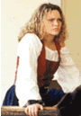

|

|
Bridget
Bishop
|
| Salem Witch Trials in History and
Literature An Undergraduate Course, University of Virginia Spring Semester 2001 Bridget Bishop has developed into a colorful character in the legendary history of Salem Village. As the first woman tried and executed as a witch during the Salem witchcraft trials, she has attracted a lot of imaginative speculation about her character and behavior. The Bridget Bishop that is most commonly portrayed is one who kept a house of refreshment for travelers, and a shuffle board for the entertainment of her guests. She generally seemed to have exhibited certain behaviors and appearances that exposed her to some scandal. She wore a showy costume for the austere Puritan times -- a red bodice. Her freedom from the severity of Puritan manners and disregard of conventional decorum in her conversation and conduct brought her into disrepute, so the tongue of gossip was generally loosened against her. She is portrayed as a folk heroine in Salem's story. A spirited, feisty, buxom, and lusty woman who flaunted Puritan morals with a happy public house where drinking and gambling occurred. Many say that it was her flashy taste in dress, her smooth and flattering manner with men, and the questionable gaieties that had gone on in her two taverns, which led to people gossiping about her as a witch as far back as King Philips War. This, however, is not the same Bridget Bishop of history. Research done by historian David Green indicates that scholars and writers have confused Bridget Bishop of Salem with Sarah Bishop, a tavern keeper in Salem Village. Bridget Bishop lived on a small piece of property in Salem Town and was between fifty-five and sixty-five in 1692, when she was accused of witchcraft. The account below follows the more historically accurate description of Bridget Bishop's life, taken from Bernard Rosenthal's book Salem Story. In 1666, the widow Bridget Wasselbe married Thomas Oliver and had a daughter named Christian. This marriage was less than idyllic. In 1678, Bridget was accused of calling her husband names on the Sabbath, and both she and her husband were sentenced to stand gagged in the market place for their offenses. In January 1679, Bridget and Thomas were both sentenced to be whipped for fighting. It was not unusual for Bridget's face to be battered during her marriage to Thomas Oliver. In 1680, she was accused of witchcraft. This accusation could have been facilitated by Thomas' claim that "she was a bad wife . . .the devil had come bodily to her . . . and she sat up all night with the devil." (Charles Upham, Salem Witchcraft). This accusation occurred after her husband died without leaving a will, and seems to be the classic case of a vulnerable, propertied woman being accused of witchcraft. She posted bond, and there is no record of any punishment. In 1687, she was charged with stealing brass objects. Her record then remains clean until she is brought up on witchcraft charges again in April 1692. On April 19, 1692 at her examination, Bridget Bishop began her testimony with courtesy and deference. This deferential attitude soon gave way to anger as she realized that denying her involvement was not an effective strategy. The afflicted girls were in the courtroom swooning in response to the imagined spectral advances of Bridget Bishop. Magistrate John Hawthorne unleashed his loaded questions, asking, "How is it that your specter hurts those in this room?" Bridget replied, "I am innocent to a witch. I know not what a witch is." Hawthorne turned this answer to his advantage by asking, "How can you know, you are no witch, and yet not know what a witch is." She replied, "I am clear: if I were any such person you should know it." Although it is not clear what Bridget meant by this comment, Hawthorne clearly took it as a veiled threat and replied, "You may threaten, but you may do no more than you are permitted" (Salem Witchcraft papers). No one can know for certain if this bold interchange earned Bridget Bishop the distinction of being the first hanged on the gallows. On May 27, Phips established a special court of Oyer and Terminer to try those accused of witchcraft. On June 2, Bridget Bishop was the first person tried in the new court, perhaps because her previous witchcraft accusation made her a likely candidate. In her trial, spectral evidence was given an unprecedented status. She was charged with "tortur[ing], afflict[ing], pin[ing], consum[ing], wast[ing]: & torment[ing] her victims," Abigail Williams, Ann Putnam Jr., Mercy Lewis, Mary Walcott, and Elizabeth Hubbard. Bridget vehemently denied the charges at her trial, believing that to be the only way to avoid execution. She did not realize that her only hope lay in confessing to witchcraft. When Cotton Mather wrote of the evidence against her in his book Wonders of the Invisible World, he included preposterous stories that could best be called gossip. One such story recounts that Bishop cast a glance upon Salem meeting house, while walking under guard. This "look" caused a board, which had been fastened with nails, to be removed to another portion of the house. Her case served as a model for future cases to come, following a very predictable pattern. The "afflicted" persons made their accusations, which were denied by the accused; members of the community told of past acts of witchcraft by the accused; and one or more confessors validated the claim of the accusers. The court used spectral evidence as the primary legal basis to convict Bridget Bishop. Hanged on June 10, her death warrant emphasizes only the harm done to her accusers, primarily on the day of her examination, as the legal justification for the execution. "On June 10, 1692, High Sheriff George Corwin took [Bridget Bishop] to the top of Gallows Hill and hanged her alone from the branches of a great oak tree. Now the honest men of Salem could sleep in peace, sure that the Shape of Bridget would trouble them no more" (Upham). Bridget Bishop was the first person to be hanged as a result of the infamous Salem witchcraft trials. |
| Bibliography
David Green, "Salem Witches I: Bridget Bishop," The American Genealogist, Vol. 57, No. 3. 1981: 130-138. Charles Upham, Salem Witchcraft, 1867. Bernard Rosenthal, Salem Story,1997. |